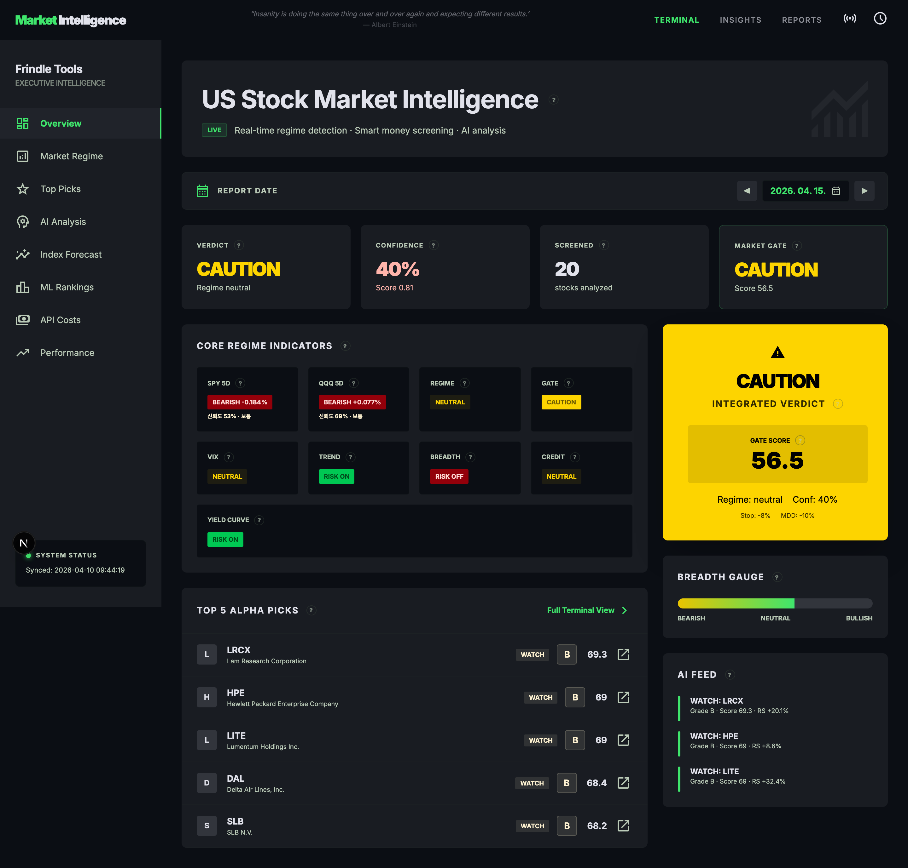
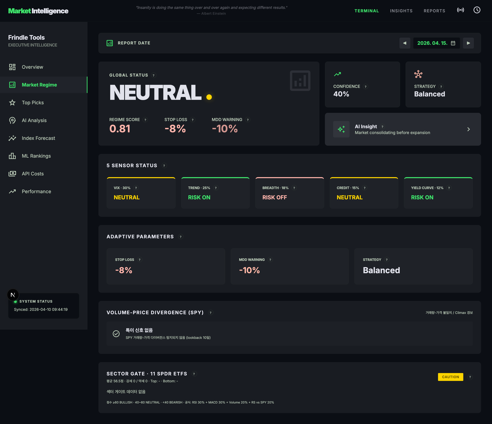
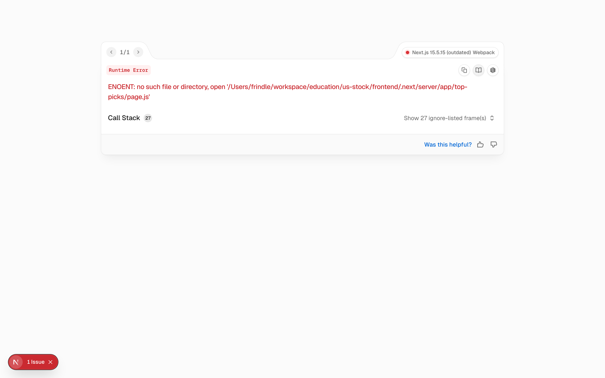
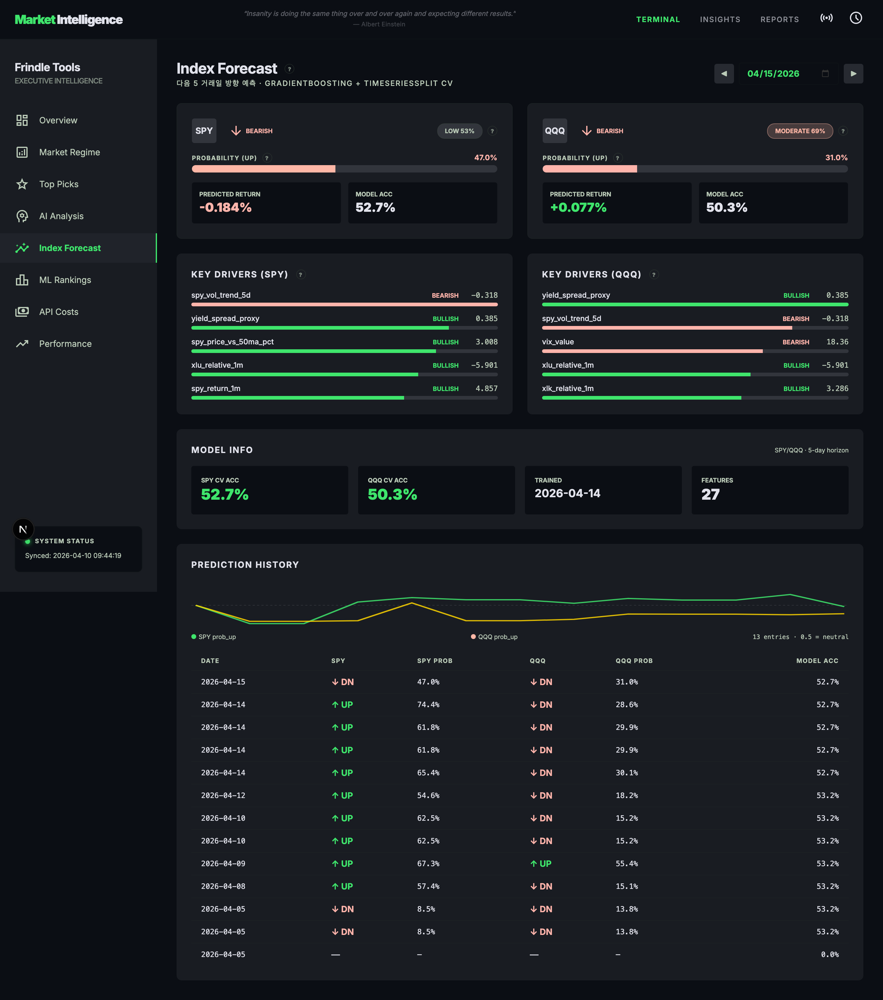
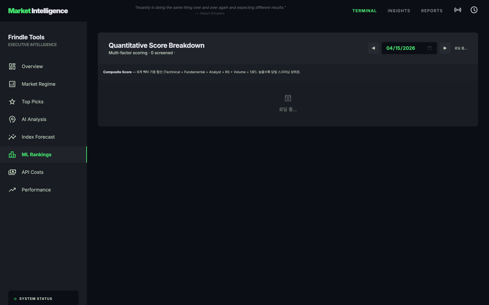

1 / 48
📱 AI 분석 대시보드 확인

AI Analysis 페이지 — LRCX Composite 69.3, Tech 75, Fund 65, Analyst 67, RS +20.1% 등 상세 점수와 AI 뉴스 요약이 표시돼요
✅
Part 4 완료! 🤖AI가 각 종목의 뉴스를 분석해서 투자 포인트를 알려줘요!
Claude Code와 함께 S&P 500 503개 종목을 매일 자동으로 분석하는 시스템을 만들어요!
코딩을 몰라도 괜찮아요 — Claude Code가 다 만들어 줘요 🤖

| 서비스 | 용도 | 발급 주소 | 필수? |
|---|---|---|---|
| 🏛️ FRED | 미국 금리·경제지표 | fred.stlouisfed.org/docs/api/api_key.html | ✅ 필수 |
| 🤖 Google Gemini | AI 종목 분석 | aistudio.google.com | ✅ 필수 |
| 🧠 OpenAI | AI 백업 분석 | platform.openai.com | 선택 |
| 🔍 Perplexity | 실시간 뉴스 검색 | perplexity.ai/settings/api | 선택 |
| 📰 Finnhub | 뉴스 + 주가 보조 | finnhub.io/register | 선택 |
brew install node python@3.13터미널에서 대화하는 것만으로 코드를 자동으로 만들어주는 AI 도구예요.
"S&P 500 주가 가져오는 코드 만들어줘" 라고 하면 정말로 만들어 줘요!
permission denied: sudo npm install -g @anthropic-ai/claude-codecommand not found: 터미널을 껐다 다시 켜보세요여기에_XXX_키_입력 부분을 실제 키로 바꿔주세요!S&P 500 503개 종목의 주가, 기술적 지표, 거시경제 데이터를 모아요.
이 데이터가 모든 분석의 기반이 돼요!
"지금 주식을 사도 될까?" 를 5가지 센서로 판단해요.
의사가 체온, 혈압, 맥박을 재는 것처럼 시장 건강을 측정해요!
| 종합 점수 | 체제 | 의미 |
|---|---|---|
| < 0.75 | RISK_ON | ✅ 시장 호황 — 적극 매수 가능 |
| 0.75 ~ 1.5 | NEUTRAL | ⚠️ 중립 — 신중하게 접근 |
| 1.5 ~ 2.25 | RISK_OFF | 🔴 위험 — 보수적 포지션 |
| ≥ 2.25 | CRISIS | 🚨 위기 — 현금 보유 권장 |
| 체제 | 손절선 | 최대손실 | 포지션 크기 |
|---|---|---|---|
| RISK_ON | -10% | -12% | 10% |
| NEUTRAL | -8% | -10% | 8% |
| RISK_OFF | -5% | -7% | 5% |
| CRISIS | -3% | -5% | 3% |

503개 종목을 6가지 기준으로 채점해서 가장 좋은 종목을 찾아요.
선생님이 학생을 6가지 과목으로 채점하는 것과 같아요!
| 항목 | 비중 | 설명 |
|---|---|---|
| 📈 기술적 지표 | 25% | RSI, MACD, 이동평균 — 차트 패턴 |
| 📊 펀더멘털 | 20% | PER, 매출 성장률, ROE — 재무 건전성 |
| 🎯 애널리스트 | 15% | 증권사 추천 평균, 목표가 상승 여력 |
| 💪 상대강도 | 15% | SPY 대비 초과 수익률 |
| 📦 거래량 | 15% | 비정상적 거래량 급증 감지 |
| 🏦 기관 보유 | 10% | 13F 기관투자자 매집 현황 |

선별된 Top 20 종목의 최신 뉴스를 모아서 AI에게 분석을 맡겨요.
Gemini, GPT, Perplexity — 세 가지 AI 중 원하는 걸 쓸 수 있어요!
과거 데이터로 학습한 AI가 내일 SPY/QQQ 방향을 예측해요.
날씨 예보처럼 100% 맞지는 않지만, 참고 지표로 활용해요!
| 카테고리 | 피처 예시 | 설명 |
|---|---|---|
| 📈 기술적 (9개) | RSI, MACD, 볼린저밴드 | 차트 패턴 신호 |
| 🌍 거시경제 (8개) | VIX, 금리, Fear&Greed | 시장 전체 분위기 |
| 🏭 섹터 (5개) | XLK/XLF 수익률 | 섹터 로테이션 |
| 📊 통계 (5개) | 이동평균 기울기 | 추세 강도 |

아무리 좋은 종목도 잘못 사면 손해볼 수 있어요.
VaR(최대 예상 손실)와 손절선을 자동으로 계산해줘요!
| 알림 레벨 | 의미 | 대응 |
|---|---|---|
| INFO | 참고 정보 | 체크만 해도 됨 |
| WARN | 주의 필요 | 포지션 크기 줄이기 |
| CRITICAL | 즉시 조치 필요 | 손절 검토 |
US Stock 분석 시스템을 완성했어요!
503개 종목을 매일 자동으로 분석하고
AI와 ML까지 활용하는 전문 시스템이에요.
이제 대시보드를 확인해보세요 🚀
